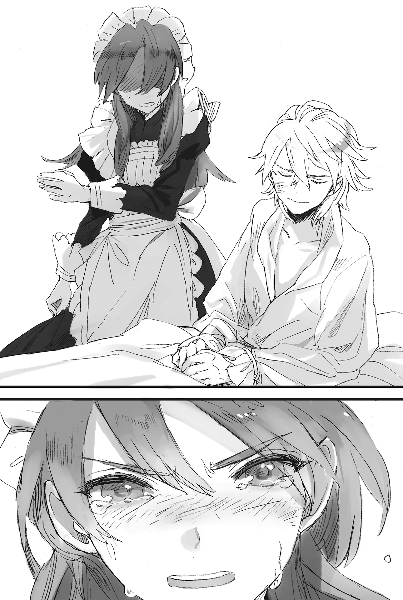

Chapter 4 – The Princess’s Sickness
.
Part 1
「……Why am I helping with paperwork in this kind of place?」
Baldr was muttering with a distant look while being surrounded by piles upon piles of papers.
(Strange. Today is the eighth day, my only holiday in a week. I should be going out to the city with everyone to kick back and relax, and yet……)
「Yer reapin’ what ya sow. I won’t allow ya to go play by yourself after introducin’ this kind of troublesome thin’ to us!」
「Then you can just do it later……」
「When are ya goin’ to use this kind of convenient thing if not now!」
「Selina, your tone is changing……」
There was a reason why Selina was this excited.
The trigger was the words that Baldr suddenly muttered while he was helping with the inventory control after the company received orders for the hand pump.
「Come to think of it, double-entry bookkeeping hasn’t been popularized here……」
「Hm? What’s this double-entry bookkeepin’ thing ya mentioned?」
「You don’t know? How should I explain it……」
It seemed the general bookkeeping in this Aurelia continent was the same as the account book in the Edo period.
Double-entry bookkeeping analyzed and visualized all transactions activity accompanied with the increase and decrease of the company’s assets, debt, net assets, earnings, and expenses from the two sides of the ledger’s creditor and debtor.
The balance sheet and the profit and loss statement that were still used even in modern times couldn’t be established without the way of thinking of this double-entry bookkeeping. This was a revolutionary method that converted financial statistics that were hard to express in writing into numerical form that anyone could easily understand.
The Edo period account book that was basically a ledger of the sale and credit could also be used for asset management, but it wasn’t suited to convert the comprehensive financial affairs into numbers like double-entry bookkeeping could. The instinct and experience of the merchant played a large part in managing assets using this old method.
Selina understood the usefulness and how advanced this method was just from hearing that simple explanation from Baldr. She too wasn’t an ordinary person.
Right now, Savaran Company was on the rise. This was exactly the moment to introduce double-entry bookkeeping. Selina decided that without any hesitation.
If he didn’t remember wrong, Germany’s literary master Goethe also said 「Double-entry bookkeeping is one of mankind’s best inventions」.
Especially in cases where the financial management became complicated with the existence of the parent company and subsidiary company or a business turning into a group, double entry bookkeeping could present the company’s property value in a very simple form.
In the future, their partnership with Dowding Company would deepen and Savaran Company would be pressed to do business with other countries and managing branch stores. The introduction of this double-entry bookkeeping was truly a divine aid in Selina’s mind.
Speed was demanded in making decisions for company management. The existence of this double-entry bookkeeping should provide an overwhelming advantage for the company.
「This one is the report of this year’s first quarter. Please check the part where the calculation doesn’t match ‘kay?」
「You demon! Even though I finally finished with the end of the year report just now……or rather, I haven’t even rested for three hours!」
「Do ya think we have any time for that?」
「That’s not how you should speak to your benefactor!」
The company’s head clerk Rorona ignored the two messing around and took care of the mountains of paperwork calmly.
「This formula is really well done. It’s also able to discover any mistake in the data entry like this. Please accept our president already, even if it’s just as a mistress.」
They had been given this much benefit as a merchant by Baldr that they couldn’t thank him enough. With this, they couldn’t possibly choose to not repay him. On the other hand, right now, Baldr had already become a very wealthy person. She already couldn’t think of anything they could give him as present except Selina herself.
The person herself was also wishing for that, so this should be a good transaction that was a win-win for both parties involved.
「Rorona! You’re selling me out?」
「If president dislikes it, should I offer myself to Baldr-sama then?」
Selina was a very beautiful girl, but in regards to mature allure as a woman, she was still not a match against Rorona.
Large round eyes that seemed to glisten, voluptuous breasts and a tight waist. Beautiful wavy hair. She had a bewitching allure with a pull that was possessed only by mature women.
If Rorona searched for a man as a woman, she would already have caught a noble or a wealthy merchant to be her husband a long time ago.
「T-that’s no good–!」
Selina panicked and caught Rorona, who was sidling up to Baldr.
Rorona was her trusted subordinate and also her best friend, but she wouldn’t forgive her if she stole the man she loved.
「R-rather than handing Rorona away……I, I’ll rather gi-, g-g-gi, gi……give……」
Selina was blushing bright red from her face until her neck. She was stuttering while sending Baldr an upward gaze.
From the beginning, it was impossible for Selina to love anybody else other than Baldr, even if she couldn’t become his first wife.
She had been dreaming for the day she was standing at Baldr’s side as his lover since day one.
Perhaps the time had finally come for her to offer her maidenly chastity that she had been protecting until now.
With such resolve that came from her running wild (she was really running wild right now, even if one was putting it mildly), Selina hardened her resolve to confess to Baldr. It was at such timing,
There was a noisy sound from a horse’s running hooves. It was accompanied by a wild neighing.
Baldr’s face instantly changed to a warrior’s look thinking that there might be another imbecilic bunch visiting this place just like the other day.
Baldr stood up while putting Selina behind him, then right after that the one who appeared before them was unexpectedly William.
Being arrogant and free should be his trademark, but right now William looked as pale as a corpse. Baldr was convinced that something really serious must have happened.
「……What happened?」
「Sorry──come with me quickly.」
William’s voice was trembling. He looked like he was going to burst into tears at any moment now. He had the atmosphere of a lost child.
Although Baldr had only known William for a short time, he had never seen him being weak like this until now.
「My bad, but only Baldr alone can come with me──it’ll be dangerous.」
Selina was about to cut in before William beat her to the punch with those words. Selina’s beautiful eyebrow twitched hearing that.
「Why’s that?」
If William was going to drag Baldr into something dangerous, there was no way Selina could just overlook that from under her very nose.
William himself must be aware that he was asking for something unreasonable here. His lips twisted in self-derision and he lowered his head powerlessly.
If it was his own life that was needed, William would give it away without the slightest hesitation.
However, William was completely powerless against the current situation.
Even so, hoping for Baldr to do something about it was something that was very selfish of him. He understood that logically. He understood, but──
「Last night, Ane-ue suddenly collapsed after she returned from the Sanjuan Kingdom. The court physician said that it’s a malignant disease and only a miracle can save her. He also said that so the disease doesn’t spread, we should at least ease Ane-ue’s suffering……and burn her.」
William’s expression was grieving as though it was he himself who was going to be burned. Baldr silently made his decision seeing him like that.
Selina, who understood what was going on inside Baldr’s mind, screamed while crying and grabbed Baldr’s sleeve.
「Don’t! Stop it! Baldr! Ya mustn’t go!」
「I know that I’m asking for something unreasonable……but no matter how much I racked my brain, I can only rely on you, Baldr. Other than someone who is looking at the world differently from the rest of us, no one can save Ane-ue……」
Because magic was developed by halves in this world, the medical technology here wasn’t advanced by any means.
What’s more, this was a contagious disease, it could be said that research regarding pathogens of the virus type was nonexistent here.
Selina had heard from her father who was a traveling peddler just how high the death rate was in case there was an outbreak of contagious disease.
In the first place, Selina’s mother also died from a disease. Her father devoted his life in order to save her mother. Right now, her father’s figure was overlapping with Baldr’s back.
There was simply no way she could just shut up here.
「There is no need for Baldr to go! He is just a student, Baldr is just a kid without any court rank!」
Selina’s words were correct.
Baldr still hadn’t reached the age where he should be burdened with any duty. There wasn’t any legal reason why he had to follow William’s order.
However, if there was any one who could open the closed door of destiny of the princess, there was no one else but him. Baldr was aware of that.
Even if his knowledge was only at the amateurish level, he was still aware of all sorts of infectious diseases that required official reporting.
(I have to go. There is no way I can run away while danger is approaching my friends.)
「Tell Silk and Seyruun for me, don’t go after me no matter what.」
「Why? Why are ya goin’? Ya won’t listen to me even after I’m begging like this?」
Baldr hugged Selina who was shedding large drops of tear. He impulsively pushed his lips on her pink small lips.
Selina’s eyes widened in surprise, but then she accepted Baldr’s lips without any complaint.
At the same time, she was made to realize that she couldn’t stop Baldr from going, no matter how much she was begging him.
『What can kill the dead──is only the death god.』
Baldr’s figure that was saying that with the resolve to head to the battlefield was already the figure of the dead itself.
「I believe in ya, Baldr……」
.
Part 2
Other than the first princess who married into the Nordland Empire, William had two other elder sisters.
One was the third princess Margaret(マーガレット) who was two years older than him, and the other one was the second princess Rachel(レイチェル) who was three years older than him.
Fortunately, the two of them weren’t similar to their father. They grew up to be beautiful women who took after their mother.
Margaret was an adorable beautiful girl similar to a small animal with her liveliness and her large eyes. On the other hand, although Rachel had a sweet face, she was a woman who was filled with tolerance and gentleness that could comfort other people.
When those girls who were members of the royal family reached the right age, it was only natural to consider their marriage partner.
Rachel would soon become seventeen years old. The king Welkin decided around two months ago that she would be wedded to the crown prince of the Sanjuan Kingdom, Abrego(アブレーゴ).
Rachel headed to Sanjuan Kingdom in order to carry out the engagement ceremony. Her eyes sparkled when she saw the subtropical southern country for the first time. She was having fun wandering the sea together with the prince.
But the day after she returned home yesterday, the situation changed completely.
Rachel was talking joyfully about her memories of the Sanjuan Kingdom when she suddenly collapsed with an intense stomach ache.
「I was the one listening to her story at that time. We of the royal family can’t choose our own marriage partner, but it seems that Prince Abrego is a man who suited Ane-ue’s criteria. She looked really happy talking about him, and yet──」
William looked down while biting his lip.
As the youngest child, William was spoiled by his whole family, but he was especially attached to Rachel with her kind and tolerant personality.
Even William, who was rebellious when his father Welkin scolded him, would honestly obey if it was Rachel speaking to him.
To be honest, he also wasn’t amused that Rachel would marry. That was also the underlying cause of his enrolment into the knight academy.
Unfortunately, although William was holding such high hopes towards him, despite having memory of previous lives, the knowledge of Masaharu who was suffering from chuunibyou was fundamentally shallow despite how vast it was.
It was completely unknown just how useful he would be.
(I’ll get scolded by Sey-nee for this……no, she might even cry.)
Baldr was shaken by the running of the horse with his hands clinging on to William’s back as he was thinking of Seyruun, who was waiting impatiently for his return to the knight academy even now.
If the princess was really infected with a contagious disease, Baldr would be unable to meet with Seyruun and the others until the disease’s incubation period had passed. That time would take more than a week.
It wouldn’t stop there. Not only Baldr, but everyone who had come into contact with the princess would need to be isolated regardless of their status and their contact with the outside world severed.
……*Drip*
Baldr felt a cold drop of water hitting his cheek. He looked up to the sky.
The evening sky had become dark before he realized it. Black clouds were rapidly approaching from the west.
It was like the representation of Seyruun and Selina’s crying and anger. Baldr bowed his head inside his heart.
Even so, he didn’t have the slightest intention of turning his back from this battle.
.
「──So you are Ignis’s son.」
Baldr was led to the throne hall by the royal guard before heading to Rachel’s private room.
The throne’s owner looked haggard even from an outsider’s perspective. Baldr silently kneeled.
Even if it was by Prince William’s request, it was illogical to let an amateur child examine the princess.
It was only natural to receive a close questioning beforehand.
Welkin glared at Baldr with a stiff expression. William gritted his teeth in irritation seeing that.
「There isn’t any time to take it slow like this! Let Baldr examine Ane-ue right away!」
「……Tell me without concealing anything. What do you think about my daughter……Rachel’s sickness?」
Welkin remembered William’s words 「The young boy called Baldr is looking at the world from outside our common sense」.
(If that’s the case──if you can at least show me a glimpse of it……!)
「The symptoms that I heard from his highness……I heard that it is an intense stomach ache that is accompanied by diarrhea but……can I ask if her highness is also attacked by fever?」
Fundamentally, fever was the body’s instinctual defense in order to oppose the toxins inside the body.
Which was to say, for the body temperature to not rise for fighting the disease’s toxin, it either meant that the body refused to recover or the body function to resist itself wasn’t working.
「If her body temperature is falling……then the highest possibility is that her highness is suffering from cholera.
「And, what’s this cholera?」
Welkin tilted his head at the disease name that he had never heard about.
In the end, cholera was the name of the disease from modern Japan. It wasn’t the name circulating in this Mauricia Kingdom.
「It’s a powerful contagious disease. Due to it causing a fierce diarrhea to the patient, many people died from the dehydration that it caused. Because the body loses a lot of water so abruptly, even a young person will dry up completely, looking like an old person with wrinkled skin.」
「So it’s as expected.」
Welkin looked up to the ceiling with his eyes closed.
「And, can Ane-ue be saved? Baldr!」
「There are various types of this disease. I don’t know which of them the princess’s cholera falls under. Even so, the chance for her to be saved shouldn’t be low.」
In case the cholera wasn’t treated, the death rate would be 50% at the lowest and 90% at the highest. However, putting it another way, humans could recover from this sickness with more than a ten percent chance even if they only relied on their own natural recovery.
However, because this disease was highly contagious, many of the isolated patients were placed in an area with bad sanitary conditions and died. There was even a case in the past where a country was ruined because of the pandemic’s outbreak.
When cholera was prevalent in western Japan in the closing years of the Edo period, it was said that the number of the deceased reached a hundred thousand.
As expected, even Baldr couldn’t make an estimate on how far this disease had spread within Mauricia Kingdom.
「Your majesty.」
「Umu.」
「Please gather everyone who has come into contact with the princess as soon as possible. After that, please give the order so no one drinks unboiled water or eats any raw ingredients from now on.」
The biggest problem right now was that one day had passed since the princess collapsed. They had to prevent the disease from spreading.
.
「Ane-ue……how can this be……」
William, who came to Rachel’s private room together with Baldr, groaned.
Rachel’s body was drying up due to the diarrhea that was leaking outside her body without pause. In just one day her skin was dangling like an old woman. Her beautiful face was covered with deep wrinkles.
The diarrhea that was accumulated in a bucket looked like water that was colored white after being used to wash rice. It was undoubtedly the typical symptom of cholera, just like in Masaharu’s knowledge.
「Don’t……look……plea……se, kill me……」
For a maiden whose beauty would even shame the flower, there would be no greater humiliation than looking like this.
Ugly skin like that of an old woman, diarrhea that continued to shamefully leak like a fountain from the anus.
The immense shame that Rachel was feeling drove her to wishing for suicide immediately, if possible.
What’s more, right now, there was an unknown young boy around the same age as her little brother in front of her.
The expression of the healer inside the room looked to be half in resignation. Baldr drove him away to the corner of the room before he clasped Rachel’s hand firmly.
A doctor must never show an expression of resignation in front of his patient.
「Please hurry and bring water with salt and sugar dissolved into it. If possible, bring some squeezed apple juice too! The more the better, just keep bringing them here!」
In case of cholera that caused diarrhea in large amounts, it was possible for the body to eject liquid in the amount that even surpassed the patient’s body weight.
This disease called cholera could make a human with a weight of 50 kg produce an amount of diarrhea that reached a hundred liters.
The highest cause of death from cholera was caused by dehydration after the body lost the water and electrolytes inside the body after repeated vomiting and diarrhea.
To deal with that, it wasn’t as simple as simply making the patient drink.
The weakened large intestine wouldn’t be able to absorb water well, so even after the patient drank water, it would only get discharged out again. In the end, many of the patients would die from dehydration.
However, when the small intestine was absorbing salt and glucose, water would also be absorbed together with them. Oral rehydration solutions were developed by using that concept.
Cholera’s diarrhea would make the patient lose a lot of sodium and potassium at the same time. It would be effective to eat apples and bananas to replenish those.
(Her stamina is exhausted far more than I expected……if only I was told half a day earlier……!)
Although it was something that couldn’t be helped, Rachel had withered and weakened more than he expected. Baldr unconsciously bit his lip seeing her.
Originally it would be preferable to directly administer nutrients into the blood vessel using intravenous drip if the equipment was available, but there was no use to wish for something that didn’t exist.
「It’ll be alright, your highness will be cured. You’ll soon be beautiful again, so please be strong!」
「Yo…..u……are?」
「I’m Baldr Cornelius, his highness William’s friend.」
(This child is that──)
Rachel opened her eyelids that had become heavy.
Splendid silver hair and fair looks that looked like a baby faced doll. Rachel thought that this boy would surely make a lot of women cry in the future.
(To think a girly looking boy like this can make that naughty William calm down……)
「Please drink slowly. It’s fine even if your highness vomits it. Please put it inside your mouth little by little and drink it.」
Baldr brought the prepared oral rehydration solution to Rachel’s mouth.
It felt like the sweet taste was seeping into her tired and dry throat.
The feeling of Baldr’s arm that was holding up Rachel’s shoulders felt liberating to her heart that was freezing with despair.
(──Perhaps I’ll really be saved.)
She had accepted that she would die ugly and shriveled covered in filth……no, she had no choice but to accept such fate. But a trickle of tears flowed down her face from the hope and relief that finally arrived.
Rachel drank three of the oral rehydration solutions before she fell into a brief sleep. After confirming that, Baldr nodded at William who had been praying continuously beside him in worry.
「She has more stamina remaining than I thought. The worst has passed.」
「Thank you! I’ll never forget this debt!」
As long as she was rehydrated adequately, the worst result wouldn’t occur as long as her stamina didn’t lose against the exhaustion.
From his conversation with Rachel just now, Baldr saw a strong will and determination for living from her. He believed that she would recover.
.
「Continue rehydrating her highness when she wakes up. Change the sheet with a new one right now while you can. Don’t wash the old sheet and gather it in one place. They have to be incinerated later.」
The problem wasn’t just Rachel’s life.
Cholera had been brought into the country, though he didn’t know from which route it entered. They had to take countermeasures so that the infection could be prevented. There were countless methods that could be taken.
「Please don’t let any of the royal family meet her highness Rachel for one week even after she gets better. Also, please gather all the maids and healers who have come into contact with her highness into one room in the palace and don’t let them out.」
Cholera spread far and wide from India until Africa, Europe, and America in the middle of the 19 th century. It was a disease with strong infectious capacity that stole the lives of hundreds of thousands.
The death rate wouldn’t be that high if the appropriate measures were taken, even so, there would be a lot of people who couldn’t be saved when they could only use indirect treatments like oral rehydration solutions.
The healer suggested incinerating Rachel’s body because he was worried by such expansion of the infection.
「If there are people who claim that they have a stomachache, please make them drink water with salt, sugar, and apple juice mixed in just like with her highness Rachel. Also, please don’t forget to wash your hands each time you enter and exit the room. Don’t throw away the gathered diarrhea carelessly. Gather it in one place and burn them all together with the buckets.」
There was already no one who was doubting or going against Baldr’s words.
The maids and healers were moving briskly as though it was only natural to obey.
The exaltation from witnessing the moment a fatal disease that they thought to be just a matter of time before death arrived being conquered was granting them a sense of duty and accomplishment.
「We also have to be on guard at the border with the Sanjuan Kingdom. Notify the checkpoint to not let any travelers who seems to be unhealthy to enter. Please give an edict at the capital too that if there is someone who has complaints of stomachache, they have to quickly receive treatment that will be provided for free.」
Because King Welkin and Prime Minister Harold carried out this instruction quickly, they were able to avoid the worst situation of the prevalence of cholera in Mauricia Kingdom.
After that, there was an outbreak of cholera pandemic in Sanjuan Kingdom that produced thousands of victims. There were also quarrels with refugees that tried to cross the border.
.
Two days later, Rachel had recovered to the degree where she could wake up from the bed. The royal family starting from William patted their chest in relief.
「I don’t have enough words of thanks for Baldr-sama.」
Rachel had recovered her smile even though she was still lying on the bed. She lowered her head to Baldr with a radiant smile.
It was innocent how she was blushing from the awareness of how Baldr had seen her ugly appearance.
「It’s enough that I was able to look at William’s tearful face.」
「Baldr……you better remember this!」
He couldn’t possibly act violently in front of his beloved sister. Baldr sent a lukewarm gaze toward William who was glaring awkwardly at him.
William tended to act like a scoundrel, but it seemed that he was essentially inclined to act like a spoiled child to those who he had opened up to.
「How long I should stay in this room?」
「One week at the very least. If we want to be on the safe side, then two weeks. If nobody else got sick during that time then we can consider this pandemic to have come to an end.」
Because of the measures that were taken speedily, the number of the infected people stopped at just three people in the end.
Cholera didn’t spread through droplet infection or air-borne infection, but through oral infection. Because of that, the infection rate was low unless one’s luck was bad.
──However, among the three people who got attacked by the disease despite endeavoring to wash their hands and sterilizing things by boiling, the name of Baldr Cornelius was included.
.
Part 3
While Rachel was recovering favorably and there wasn’t much longer before she would be able to meet with her parents, the cholera symptoms suddenly appeared on Baldr.
Although he understood the symptoms in his knowledge, the intense pain and the diarrhea that gave no leeway for any resistance wasn’t something endurable even for Baldr’s thoroughly trained body.
Because the treatment method had been taught to the healers, the three patients including Baldr were provided with an oral rehydration solution and steps were taken like with Rachel in order to prevent them from getting dehydrated. But in a stroke of misfortune, Baldr’s condition was more serious than everybody else.
A day later after Baldr fell ill, the disease caused disturbances within Baldr’s consciousness and he was wandering between the abyss of life and death.
The majority of cholera germs would commonly be destroyed by stomach acid while the surviving germs would breed rapidly in the small intestine. However, sometimes the symptoms could become heavier with marked difference in case the patient didn’t produce much stomach acid.
In such a serious case, the patient wouldn’t just get stomachache and diarrhea, their body would also convulse and their consciousness would be disturbed. In most cases this was caused by the cholera germs proliferating at an abnormal rate.
The problem was that the death rate of such serious patients was extremely high compared to other patients whose condition wasn’t that serious.
.
(My body is heavy……)
To Baldr, it felt like his body didn’t belong to him anymore.
There was a heavy sense of fatigue as though gravity had been doubled. His throat was hurting for water, but he couldn’t utter a single word.
(This might be bad……)
His consciousness had been disappearing several times since last night, so he understood that his symptoms were really bad.
Even his willpower was hitting rock bottom. He couldn’t even strengthen his body with magic.
For his life to meet its end in less than thirteen years with him being unable to even move a single finger of his satisfactorily, as expected, even for Baldr that was something he was unwilling to accept.
Even so, now that he was in this state where he couldn’t do a thing, his willpower of his absolute refusal of dying was vanishing like water that was spilling from his palm.
(No good, this might be seriously bad……)
Humans would be beyond saving if they lost their willpower.
Putting it another way, humans were creatures that wouldn’t die that easily as long as their willpower held on.
Even after their stomach was cut up and their bowels bursting out from the stomach pressure, humans had a hard time dying if they didn’t accept their death.
Conversely, someone without the will to live would easily die like a burnt out candle, even if they were just lying down peacefully on a mat.
Unseen arms were pulling Baldr down into a dark underground, as though to sap the vitality, stamina and willpower that he needed to live──he felt a feeling of weightlessness as though he was falling forever. Baldr resigned himself for his time to end.
The will to resist or the will to stand up were already gone from him.
Just when he was about to entrust himself to this flow of falling down forever, the moment all the tension left his body.
There was a soft feeling that liberated him from gravity and he felt his body being lifted up.
It was a nostalgic warmth……it was as though a cradle that rescued him up to the ceiling was protecting himself.
Baldr noticed that within the warmth, there was a pleasantly sweet fragrance tickling his nose. It was a scent that he knew better than anything.
(This scent……Sey-nee?)
The girl who was like his big sister. She was always at his side since he was little, always there when he turned around.
The instant he was aware of that familiar body scent, Baldr recovered his consciousness and willpower that were melting into nothingness.
There were Seyruun and Selina, people who were waiting impatiently for his return.
There was no way he could allow himself to be defeated by a disease like this without fighting back.
At the same time, Baldr couldn’t help but feeling a sense of danger within his consciousness that was finally clearing up.
That was, for him to be able to feel Seyruun’s scent like this, didn’t that mean she was near him right now?
Baldr’s consciousness was slowly awakening along with the sensation of pain that was spreading from the back of his head to his whole body.
.
「Are you awake? Young master!」
Baldr opened his eyes. The familiar but breathtakingly beautiful face of Seyruun whose eyes were wet with tears filled his sight.
「……Sey……nee……」
He wanted to yell loudly, but his lips could only make a hoarse voice.
(Why is Sey-nee in this kind of place!? Even though only healers should be allowed to come near!)
「Please open your mouth and drink this. Young master hasn’t been taking water since some time ago because you will always vomit it right away!」
It seemed he was in a very dangerous condition while he was unconscious.
He had also resigned himself to death once inside that dream, so Baldr gave up questioning her and obediently drank the oral rehydration solution.
The sweet taste passed from his tongue to his throat. He could clearly feel it moistening his body from the inside.
「Uu……uu……young master Baldr……hics」
Seyruun seemed to feel spent when she saw Baldr gulping down the water. She sat down and started sobbing.
When he looked closer, she looked like she had wept her eyes out from the swelling around her eyes. Her hair was also looking messy and her white skin was also losing its luster. Perhaps she hadn’t gotten any sleep.
Surely she was crying all this time while Baldr was unconscious.
Baldr recalled Seyruun’s warmth that he suddenly felt the instant he gave up living inside the dream. He couldn’t help but feeling grateful to her devotion that saved his life.
「Thank……you……Sey……nee……」
He wanted to hug her. He wanted to hug Sey-nee’s trembling small body tightly and caress her head while consoling her「Don’t cry」.
Baldr was vexed by his exhausted body that couldn’t do anything and only barely managed to lower his head.
Seyruun shook her head before she clung on to Baldr’s neck and wept again.
There was a bright sweetness like a sunny place from Seyruun’s brown blond hair that lost its glossiness from exhaustion. It was a scent that was characteristic of Seyruun.
Baldr mustered all his strength and somehow managed to hug Seyruun’s head. Loveliness that was different from what he felt until now was filling his chest.
.
Part 4
Originally, Baldr’s stamina far surpassed Rachel.
After he recovered his consciousness and the worst of the illness was over, his recovery was quick.
Surprisingly, the next day Baldr had recovered to the degree that he could wake up and walk around if he felt like it.
.
「Even so, how did Sey-nee manage to come until where I am?」
Baldr was objecting to Seyruun’s presence itself in this place where it was possible she might get infected.
If he was conscious at that time, Baldr would forbid her to be here at any cost. Although in that case, there was a high possibility that Baldr would lose his life.
Hearing Baldr’s words, Seyruun’s face was rapidly turning into a Hannya. Baldr noticed that he had stepped on a big landmine with that.
「──Yes, yes, it was really difficult. Selina-san came running at me while crying, then when I hurriedly rushed to the palace, the knights wouldn’t let me pass. They wouldn’t tell me anything about young master’s condition.」
Seyruun’s hands were trembling. She was recalling the anxiety, impatience, and anger at Baldr’s selfish action at that time.
「I finally learned of the situation because of Princess Rachel’s tactfulness. She apologized that the young master collapsed from treating her. Selina-san and Silk-sama also haggled with her highness to be able to take a look of young master, but Rorona-san and Marquis Randolph forcefully held back Selina-san and Silk-sama, so I’m taking care of young master here as everyone’s representative.」
If no one stopped them, then even Selina and Silk would also run to Baldr’s side without thinking of their own safety.
However, the palace’s security was strict due to this powerful contagious disease too.
Seyruun herself most likely would be unable to meet with Baldr no matter how much time passed if not for Rachel and William’s intermediation.
Selina was holding the hand of Seyruun while crying tears of frustration and said「Please take care of Baldr」 to entrust the rest to her. When Seyruun thought of their frustration at that time, she felt like her blood was boiling even now.
.
「I have messages from the two of them to the young master.」
Seyruun glared at Baldr with resolve.
Baldr’s body was still thin and he hadn’t gone back to his normal condition, but Seyruun knew better than anyone just how tough Baldr’s body was.
After recovering this far, there wasn’t any need for her to hold back.
「Don’t ya leave me alone for that kind of thin’ as you please!」
Seyruun’s small palm slapped Baldr’s cheek with a dry slapping sound.
Baldr did nothing except quietly accepting Seyruun’s first violence on him.
「──Just now was Selina-san’s part.」
He had nothing to say back at all.
Baldr looked down crestfallenly because he had the awareness that he made Selina cry.
「Baldr, you’re the worst.」
And then another slap hit Baldr’s cheek in no time at all.
「──Just now is Silk-sama’s part.」
This was that serious Silk they were talking about. Even though she understood why Baldr did what he did to save Princess Rachel, there was no doubt that she was furious that Baldr went off alone without discussing anything with her.

「……And then my part. Young master, close your eyes and grit your teeth.」
Baldr obediently closed his eyes seeing Seyruun’s menacing look.
For Baldr who had been trained hard by Maggot, the slap of the powerless Seyruun wasn’t anything painful. Rather, it was already the most satisfactory if he could be forgiven with just that much.
However, no matter how long Baldr waited, the slap that he was readying himself for never came.
Far from that, he thought that he could feel some kind of hesitation in the air. He also felt the sweet breath of Seyruun near him.
He reflexively opened his eyes and found Seyruun’s face approaching him until their lips were almost touching. His palm quickly grabbed her face and pushed her away.
「What is young master doing!?」
「That’s my line!」
His lips were almost snatched away.
He hadn’t taken any baths since he collapsed. If Seyruun kissed him in his unsanitary state, there was a high risk the cholera would infect her.
「It’s unfair that the young master only kissed Selina-san! I demand equal opportunity!」
「Equal opportunity……I don’t get what you mean.」
Baldr recalled the moment when he impulsively kissed Selina before he followed William to the castle. He blushed.
「Does the young master understand my feelings because Selina-san beat me to the punch with your first kiss? Now that it’s come to this, I’ll take the deep kiss first.」
「I don’t give a damn! A-anyway, calm down for now, Sey-nee!」
At the very least they should do their best to avoid having physical contact with each other for one to two weeks while the infectious capacity of the cholera germ was at its highest.
In order to convince Seyruun somehow, Baldr spent nearly an hour and promised that he would kiss her as soon as he was completely recovered.
「……Why did it turn out like this?」
.
Part 5
「──My deepest apologies. I’m thankful to you from the bottom of my heart.」
King Welkin said that and lowered his head.
In the end, Baldr needed nearly half a month in order to recover fully.
Fortunately no pandemic of cholera occurred and it ended with only three people infected.
This was thanks to the swift isolation of the source of the disease and the maintenance of public health. They even mobilized the palace’s knight order to force the capital’s citizens to wash their hands and sterilized everything by boiling.
Welkin received a record that a pandemic had broken out in Sanjuan Kingdom. He felt the need for a thorough measure.
「──I used my own judgment to inform the Sanjuan Kingdom the method of treatment and prevention of the disease. However, things have became a little bit troublesome.」
The prime minister Harold continued the talk with a disgusted expression.
It was rare for a first rate diplomat like Harold to reveal his emotion this blatantly.
It seems that it was a very troublesome matter. Baldr was feeling uneasy, even though this wasn’t his problem.
After all, in this kind of situation, there was a high chance he would be dragged into it from his previous experiences.
「Actually, the culprit who infected Princess Rachel was Prince Abrego.」
「Haa?」
The source of infection was a prince. That completely came out of the left field.
The cholera disease fundamentally propagated from unsanitary kitchens, garbage dump, and the likes.
In most cases cholera would break out among the poor people. The disease would spread up until the upper class, usually at the last stage of the pandemic.
「I don’t know how to say this. Actually, the prince is famous for his licentiousness. He was keeping several prostitutes in the city as his lovers……it seems that one of them was the source of infection.」
Welkin looked clearly displeased and spoke with a roughened voice.
「That man didn’t even wash his dirty hands after embracing other women and touched Rachel all over as though they were so intimate already. In the end, he even snatched her lips even though they haven’t married!」
No no, they had been engaged so just that must have still been within the tolerable limit, right? Baldr just barely swallowed in that retort.
This kind of anger was due to emotion instead of logic. It was impossible even for the person himself to control it.
It was a truth that Baldr could understand because he had been a victim of such anger many times until now.
「It seems the next day after the two of them bid farewell to each other, the symptoms also appeared on Prince Abrego. Unfortunately, their attempt to treat him didn’t produce any results and he died. I have to say that Sanjuan Kingdom has committed a great blunder with how they hid the prince’s licentiousness and the cause of his death from our country.」
Most likely they couldn’t openly say something like 「The prince died because he got infected by a disease from a prostitute」.
That might be alright if Rachel didn’t get infected…….
The influential people in Sanjuan also never thought that the prince would lay his hand on another country’s princess, no matter how loose he was with women. However, generally that kind of man is lacking in restraint as a rule.
「And then those bunches dared to demand for the engagement between the second prince Franco(フランコ) and Margaret so impudently.」
「With her highness Margaret?」
Welkin let out a sigh without being able to clear away his resentment. He squared his trained broad shoulders.
「It seems they have an unwritten rule that a woman who once had that kind of disease cannot become the wife of royalty.」
Harold said that. He also couldn’t hide his displeasure.
Baldr also couldn’t feel comfortable with this story now that he had been acquainted with Rachel.
Political marriage was the duty of someone born in the royal family, even so that didn’t mean others could freely treat them as mere tools.
「Because of that, we already told the Sanjuan Kingdom about our intention to refuse the engagement with the second prince. Even so, it wouldn’t be in our nation’s interest to be in a hostile relationship with Sanjuan Kingdom……」
「Sanjuan Kingdom is now greatly in our debt because of Prince Abrego’s blunder. However, in order to keep secure our relationship with an allied country that we can trust, I believe that we need to make them further indebted to us.」
「Haa……」
Wasn’t that already achieved with the method to treat and prevent cholera that was mentioned just now? Baldr thought this, but he got the feeling that he would only stir up the hornet nest if he carelessly asked further, so he only nodded vaguely.
Three Welkin stared at Baldr with a nasty smile.
It was an expression that was overflowing with childishness, like a mischievous brat who was trying to set up his friend into a trap.
「It’s irritating, but we can’t give a lesson to those Sanjuan bunches right now. I don’t feel like giving them my daughter, though. Do you understand why we can’t antagonize them right now?」
「──Is it a problem with the Trystovy Dukedom?」
「You’re a shrewd brat just like I thought.」
Welkin nodded satisfactorily at Baldr’s correct answer.
Sanjuan Kingdom was located south of Mauricia Kingdom. It was a country that was located at the southern edge of the continent. Its neighboring country, Trystovy Kingdom, possessed the area west of Sanjuan Kingdom and the Lobelia(ロベリア) Peninsula as its territory.
Mauricia Kingdom who had Silk in its possession wanted to have an alliance with Sanjuan Kingdom in preparation for the coming war.
In addition, if the civil war of the Trystovy Dukedom could be ended under the leadership of Mauricia, Mauricia’s national power would increase and its nemesis Haurelia Kingdom should be unable to easily start anything.
Because by that time, Mauricia Kingdom would be able to expect reinforcements from their allies in the Sanjuan Kingdom and the Trystovy Dukedom.
Even so, Mauricia Kingdom had to be this concerned with its relationship with Sanjuan Kingdom, making a political marriage like this necessary. Baldr believed that the reason for that was surely due to Trystovy Dukedom’s movements.
「 I think you know already, but Trystovy is fundamentally a country that is focused on commerce. The previous king was contributing to its development. After the nobles oppressed the merchants, the merchants of that country went to support the royalty faction. However, the princess who they propped up as their figurehead died and the daughter she left behind was still too young that they felt uneasy looking up to her for leadership. There the merchants started to think of making compromises with the nobles. There would be some worry about the future if they go that way, but they are considering that perhaps they could just use money to shut the nobles up in that case. 」
Such movement was already starting from the early days of the civil war.
The business in Trystovy Dukedom that was still maintained and the major merchants that were surviving even now were proof of that.
From where they were standing, it didn’t matter who ruled the country as long as they could continue their profit and business.
They were leaning to the royalty faction at the start simply because it was easier to do business during the rule of the previous king, who respected their business rights and eased up the taxes on them, when compared to the tyrannical rule of the nobles.
「Of course, it’s also not desirable for our country if Trystovy is united based on those merchants’ convenience. After all, there is no way they will be friendly with us, who is in possession of the legitimate heir to the throne. In such a situation only those Haurelia savages will be happy.」
If they were to act carelessly, it was also possible for the situation to develop where Mauricia Kingdom would be pincered by Trystovy Dukedom and Haurelia Kingdom. That would be a nightmare for Mauricia Kingdom.
「Well, that’s why. I want to send you to Sanjuan Kingdom as a goodwill ambassador.」
「How does it become that kind of conclusion!?」
Welkin chuckled with a face like a kid who succeeded with his prank.
「The treatment method of cholera that we taught to the Sanjuan Kingdom, in addition to the hand pump that we’re planning to supply them with. There is nobody more suitable to explain these things other than you right? After all, you are the one who invented them.」
「I’m still nothing more than a student in the academy though?」
「About that ……」
Welkin suddenly held out a sword toward Baldr.
Naturally, even Baldr knew what was the meaning of the gesture as a part of nobility.
Baldr kneeled. Then the flat of the sword slowly touched his shoulder.
「Baldr Cornelius, I appoint you now as Baron Severn. Respectfully accept this honor.」
「This humble servant, Baldr Cornelius, swears to the lion crest and this sword that I shall be loyal to the kingdom until this body expires.」
At the end Baldr offered his lips to the sword.
Here a baron of the kingdom, Baldr Severn Cornelius(バルド・セヴァーン・コルネリアス), was born.
「……Isn’t this too whimsical of you, your majesty?」
「I think this is still too insufficient to reward your accomplishment of saving Rachel and the citizens of this kingdom though. Besides, although I give you the rank of baron, it’s just a title without any territory accompanying it. For the time being, there won’t be any problems with your status in serving as an ambassador.」
Baldr became the youngest person in the kingdom who possessed a court rank at the present time. He shrugged with a troubled look.
His understanding couldn’t catch up with the developments that were moving too fast.
「To be honest, I have high expectations of you. I’m also grateful to you. That’s why I won’t ask you anything unnecessary. Like how did you obtain your knowledge, and whether you have any other information……. In exchange, I’ll listen if you need any advice, and also, go raise achievements if possible. Before this Harold runs wild, that is.」
「I’m opposing this decision even now. Lord Baldr’s knowledge is valuable enough that the kingdom has to manage it strictly.」
If in the worst case that Baldr defected to another country or he got assassinated, it didn’t matter how much useful knowledge he saved up, it wouldn’t bring any benefit at all for this kingdom.
Thinking normally, Baldr who devised the hand pump and also knew about how to treat cholera must still have other useful information.
If Baldr wasn’t a noble and also wasn’t the heir of Cornelius House, he might be forced to spit out everything he knew even if they had to torture him.
But now he wouldn’t be asked about it. This was nothing but the proof of King Welkin’s strong trust towards him.
Welkin was famed to be a scheming person, but he was a generous and tolerant lord towards his trusted retainers.
Harold himself would be driven away from his prime minister post if he didn’t have a strong backer like Welkin.
「Come consult me at any time if you think that the problem you face is beyond your capability. I don’t think that you will make the wrong judgment if it’s you, but you won’t be able to avoid meeting a problem where experience is necessary no matter what.」
「I’m grateful for your majesty’s words.」
「Give those Sanjuan bunches a little bit of a scare. I’ll leave the method to you.」
「By your will.」
(I’m really not a match against this man──)
It felt like he was dancing on Welkin’s palm from beginning till end.
He was guided to be unable to refuse and also made to harbor loyalty toward him. If he was doing all of that purposefully, this wasn’t at the level of mere scheming anymore. It was like his existence itself was a wicked magic.
However before Baldr departed to Sanjuan Kingdom, there were girls who he had to persuade first no matter what.
Furthermore, those girls were terrifyingly stubborn and also precious to him.
Baldr felt down from imagining how difficult it would be. Luckily or unluckily, his lack of attention made him miss the words that Welkin muttered with a small voice.
「……I’ll have to first see whether you can clear a trial of this level or not if I’m going to leave Rachel to you.」
Sly. As expected from the king, how sly.
.
Part 6
Baldr was finally freed from the palace. His friends were all gathered at the Savaran Company.
Considering the size, it would be preferable to gather at Silk’s mansion, but as expected it would gather a lot of resistance if she invited someone who had just gotten infected by a disease to the mansion of Marquis Randolph, one of the ten great nobles.
「Gufuh……ufufufufufufufu……」
「It’s disgusting, so can you stop laughing like that?」
「Really sorry for this……nyufuh」
「──The next time you show me that nasty face……I’ll tear them off.」
「What are ya goin’ to tear??」
Selina, who instinctually felt danger approaching, covered her conspicuous breasts that were being stared at by Seyruun’s gaze.
It was only natural for Selina to twist her body excitedly and smiled widely like this.
Around two weeks ago, she was passionately embraced and also had her lips snatched away by the man who she had carried a torch for many years. What else could that action be called other than confession?
And then that man told her 「I have something important to talk about.」 It would be strange if she wasn’t in high spirits like this.
Seyruun also wasn’t in a bad mood at all despite the complaints she was muttering.
She was impatiently waiting for the day the promised kiss would arrive. It felt like each moment was stretching to eternity for her.
The two maidens were each displaying their strange silliness under their respective wild delusion. Silk was staring at them with a cold gaze.
Although it was true that her reaction was also caused by the fact that she was the only one who didn’t have any secret development happening between her and Baldr, it was also because of her exasperation. Because if one were thinking with common sense, there was no way a romantic development along the lines that the two of them were expecting would happen with how Baldr was also calling other people here too.
Although that didn’t mean she didn’t think anything about these two who were already falling into romance obsessed fools so early like this.
(──Filthy filthy filthy filthy filthy filthy filthy filthy filthy filthy filthy filthy filthy!)
If Baldr witnessed this scene, he might run away at full speed without caring what others would think of him.
「A Seyruun who is blind with love. This is nice in its own way!」
「You really never change, huh.」
Teresa was loyal only to her desire, come hell or high water. Brooks stared at her with a kind of respect in his gaze.
Baldr appeared in such a chaotic situation. Although he had resolved himself, he was suddenly attacked with an impulse to turn around and dash away.
.
「……Departing to……Sanjuan Kingdom?」
「Well that’s……it’s a royal command from his majesty. I’m not allowed to refuse.」
This was actually a step that the king took because of his kindness.
Originally, Baldr should be imprisoned in the palace in order to secure the secrecy of the information he had.
Of course, if that happened, an enraged Maggot would bury the palace with corpses, but it didn’t change the fact that Baldr was an extremely dangerous bomb to the kingdom.
In order to preserve his safety in the future as well, Baldr needed to answer the trust that the king had given him with a visible achievement.
「What are you going to do about the academy……?」
Teresa asked.
「Forget about being a knight, I have obtained a court rank……just in case, it seems this will be considered a temporary absence. Though it’s doubtful whether I’ll really be able to graduate like this……」
「Do you think I’ll just overlook something this interesting quietly? By all means allow me to accompany you to Sanjuan Kingdom too!」
「Great idea! Let me come too!」
Brooks cut in vigorously.
For the two of them ,the academy wouldn’t necessarily be important for their life.
Teresa would prioritize anything interesting, while Brooks needed an environment where he could grow stronger and a place to display his strength.
The two of them were convinced that trouble and adventure would follow around Baldr wherever he was going.
They didn’t know what kind of trouble would come at Sanjuan Kingdom, but there was no option of being separated from Baldr here.
「I don’t know whether you two can receive permission or not, but it’ll be a big help if you two come along. As expected, the mood will be too stiff if I have actual knights as my subordinates.」
If it was only about individual strength, then both Teresa and Brooks wouldn’t fall short against the average knight.
There might be a serious problem with their manner and speech, but they should be useful enough if they accompany Baldr as guards.
Sometimes, even Baldr himself would almost forget that he himself was still a child who would only turn fourteen in a few more months, but as expected it would be tiring for him to deal with adults.
「I also want to come but……it will depend on father.」
Silk, who was the only child of Randolph house, wasn’t in the position that would allow her to go out of the country easily.
Not to mention Trystovy Dukedom’s condition being unstable right now. It would be nearly impossible for her to go──that was what Baldr thought, but he desisted from speaking that out loud.
He should refrain from being untactful and making Silk uneasy.
It was also a problem whether his temporary absence would be allowed or not, but the headmaster there was that Ramillies. He would surely just laugh and allow this as though it was nothing.
「How long do you think you will stay at Sanjuan Kingdom?」
「At the very least one month──if it’s take longer then it will take more than three months.」
He would need at least around that long in order for the technology support to progress to some extent and for the people there to be able to accept the new invention.
Even so, he would have to make Sanjuan Kingdom indebted to the Mauricia Kingdom with certainty, so they wouldn’t have any time to play around there leisurely.
「Of course young master will also bring me along right?」
Seyruun interrupted in a panic at the suspicious direction the talk was going.
She couldn’t allow Baldr to go off to a dangerous place again while leaving herself behind, even though he had finally returned just now.
Her feeling where it felt like she was in heaven just now had vanished without any trace. Seyruun felt like her chest was torn apart painfully by this crisis where they would be separated from each other.
This pain was partly caused by her womanly desire that wished to be loved back by the person she loved, but for Seyruun, not being able to stay beside Baldr was even more painful than not being loved.
To be in service of Baldr was her life’s most important raison d’etre.
「Y-yeah! Actually, I also have a business in Sanjuan Kingdom……」
「Please give up. Do you think the president has any leeway to leave the capital right now?」
「Uguu……」
Selina’s scheme was tragically sinking from Rorona’s cold retort.
However, in the first place, it was out of the question for Baldr to bring along Seyruun and Selina with him for a diplomatic mission to another country where he had no allies at all while he was responsible for safeguarding Mauricia Kingdom’s reputation.
It was an everyday occurrence that “yesterday’s enemy is today’s friend” in diplomacy. He couldn’t know when the Sanjuan Kingdom might turn into Mauricia Kingdom’s enemy.
That was especially the case when at present there was a high possibility that every faction in Trystovy Dukedom was maneuvering behind the scene.
「──I’m sorry, but I can’t bring you two this time. I can only bring those who have sworn loyalty to the kingdom and can also protect themselves.」
「No way–!?」
The strict verdict that allowed no compromise made Seyruun cry with a sorrowful voice.
When she imagined that she would spend days worrying about Baldr’s safety by herself again, her body was paralyzed from despair.
(I won’t be able to take it back anymore after I say this……should I say it? Or not?)
Baldr was unusually hesitant to make his decision, but when he thought how his heart had already decided, he realized that postponing it would only bring unhappiness for everyone.
Baldr took a deep breath and resolved himself. He put his strength into his navel.
.
「I want the two of you to become my place to return to here. Because I intend to take the two of you as my wives when the right time arrives.」
.
A heavy silence followed his proclamation.
It was too silent that Baldr was seriously questioning himself that perhaps he had been excessively self-conscious all this time.
Don’t tell me that Seyruun and Selina are actually not seeing me as a man? If that’s the case…….
「Really?」
「Are ya serious?」
The two finally muttered only those words with hoarse voices.
Despite the three of them having known each other for years, Baldr had never shown any sign of romantic manner to the two of them.
He only showed such a sign once when he impulsively kissed Selina just before leaving for the palace.
Of course Baldr’s age and status became a big hurdle for the two of them.
「When Selina asked me to not go, my chest felt painful. I actually wanted to do as Selina asked. When Sey-nee came to nurse me, I was unconscious at that time, but I felt really at ease even then. Just thinking that the two of you aren’t here or getting taken away by another man while I’m still alive makes me feel like my blood is boiling. What I’m saying might sound doubtful to you two because I’m still a child but……I want to live together with the two of you from here on too.」
If he was asked whether he was feeling any sexual desire, the honest answer was no.
Although Baldr almost reached puberty, he wasn’t at the age where he was hungry for women that much.
However, he felt his heart beating fast and also a pleasant feeling at the same time when they were at his side.
When he thought that he might lose them──when he resolved himself to head to the palace for treating Rachel, an intense sense of danger assaulted Baldr.
When he thought back, he was also harboring a similar sense of danger when they were attacked by powerful enemies from the neighboring country at Cornelius territory.
The two’s existences were irreplaceable for Baldr. They were worthy for him to stake his life for.
Selina and Seyruun finally understood that the hope they had been secretly wishing for all this time had become reality instead of just a dream.
At the same time the two of them hugged Baldr with their overflowing feelings.
「Baldr!」
「Baldr-sama!」
Although there hadn’t been many days since they began to be aware of their feelings clearly, they already had the resolve to spend their whole life with him.
After all, while a part of their heart somewhere deep inside might be trembling in fear that this moment’s arrival might never come, even then they had been hoping for it all this time.
.
「I’m happy for you two.」
Silk was surprised by the unexpected calmness her heart was in.
There was a feeling of frustration by this happening where it felt like she was left alone by her best friends. However, the happiness she felt from Seyruun and Selina’s first love coming true surpassed that.
Perhaps it was just as she expected, the feelings she held for Baldr wasn’t more than friendship.
Her head turned blank and she couldn’t think anything the moment Baldr proposed the two of them, but now that she had calmed down, she was able to easily accept that there was no way these two could be anywhere except at Baldr’s side.
Nevertheless, when she imagined that it wasn’t these two but a stranger that Baldr proposed to, she felt a dark sentiment coiling up inside her stomach and writhing around searching for an outlet.
Just what did she wish to happen between her and Baldr……?
She had no dissatisfaction standing at Baldr’s side.
If someone was going to propose to her someday, she wished that it would be a brave and strong man like him.
However, Baldr was the only son of the Cornelius House, while she was the only child of the Randolph House.
Depending on the situation, there was also a method of giving birth to two children and having each of them succeed the two houses, but Randolph House was too big to apply such a method.
In addition, Silk had to save Trystovy one day. It was her dearest wish that she didn’t know whether it would come to fruition or not even if she spent her whole life for it.
There was no way she could drag Baldr, who would be the feudal lord of Cornelius, to such an overambitious aspiration.
(──As I thought……perhaps I’m a bit jealous……)
Silk smiled wryly while seeing the two rubbing their cheeks on Baldr’s chest like children (Seyruun was still a child age wise though).
Perhaps there would be a different future for her if she was born at Baldr’s side as a mere city girl instead of her current status.
.
「Ooo! That’s right! I got a great idea!」
Teresa suddenly clapped her hands and raised a delighted voice.
Teresa had been glaring at Seyruun and Selina with an antsy gaze until just now, but now she was smiling mischievously with delight.
「If I marry Baldr, Seyruun and Selina will also come along in one package! How about it Baldr? Won’t you marry me?」
「NOOOOOOOOOOOOOOOOO!!!」
The screams of the three girls overlapped each other at Teresa, who was unwavering with her desire come hell or high water.
It would be nothing but a nightmare if this slightly troublesome yuri character joined into this romantic interaction and spoiled their long-awaited progress.
「Why? I think that I’ll become a good wife, you know? After all, you’ll be able to create a harem as you please.」
「Don’t throw my family into chaos just for your desires.」
Teresa’s cheeks puffed in displeasure towards the reaction that was different from her wish. As expected Baldr, Seyruun, and Selina had no intention to accept this unreasonable demand from her.
Or rather, Seyruun and Selina were seriously feeling danger towards their chastity. They had been sexually harassed many times by her until now, so it was only natural for them to react like that.
Because of that, no one in that place noticed how fierce Silk’s refusal to Teresa’s proposal was too.
.
Part 7
「Baldr collapsed? And? Is Baldr safe!?」
Maggot who received a notification from the royal capital that was sent through a fast horse fell into ultimate worry.
Even though it was already unforgivable that Baldr got summoned to treat some contagious disease, he also got infected himself and wandered the line between life and death.
(This is why I opposed Baldr going to the capital……!)
「Fortunately, Baldr-sama has already recovered due to Miss Seyruun’s devoted nursing without any regards to her own safety. For his achievement at this occasion, his majesty Welkin-sama has decided to bestow him with the status of Baron Severn.」
「Seyruun! You did great! My decision to keep you at Baldr’s side wasn’t wrong!」
Maggot broke into a smile at the devotion of the maid that she had shown favoritism to since she was little.
「Is Baldr alright? I hope he doesn’t get any after-effect from the disease. No, as expected I have to go there and check his condition directly──」
Maggot looked like she would immediately prepare to depart right away. The messenger replied to her hesitantly.
「About that, it has been decided that Baldr-sama will be send to Sanjuan Kingdom as an ambassador after this.」
Maggot’s expression turned as blank as a Noh mask. Ignis who was near her hurriedly hugged his wife from behind.
Ignis knew better than anyone just how dangerous this sign from Maggot was.
「──Is his majesty picking a fight with me?」
「I-I swear that there is no such thing! His majesty is holding a really high opinion of Baldr-sama. His appointment this time to be an ambassador is also to be a trial to test whether he is worthy for Princess Rachel or not……」
「Aaa?」
Even if this course of events should be an honor for the people involved, for the current Maggot, this act only looked like her son was getting thrown into the bottom of a ravine.
Besides, she didn’t have the slightest intention of giving her treasured son to this little girl called Rachel who she had never even met before.
「Wait! Wait! His majesty too only has the best intention! Please let this go in deference of me here! ……What are you doing!? Go back already, now!」
The messenger didn’t understand why Maggot was getting angry. Even so, he clearly felt that his life was in danger.
.
The messenger ran away with lightning speed. Inside the hall that had become empty, Maggot looked toward Ignis with a ghastly smile.
「Can I take this to mean that you are agreeing to take on this aimless anger of mine fully?」
Ignis was about to answer 「Of course」, but the experience that he had cultivated for many years was ringing the alarm loudly. It was telling him that this was a death flag.
「……Sorry, but can I bring Zirco and Mistol with me too?」
The two mercenaries were brought in by Ignis’s order. Seeing the infuriated Maggot, they realized what kind of extremely dangerous spot they were placed in.
「I’m sorry to ask this from the two of you, but we shall stand here and fight to the last man. No retreat shall be permitted.」
「……Chief……come back quickly and take me away with you toooo!」
Zirco’s sight was blurred with tears.
Their hopeless battle was going to start.